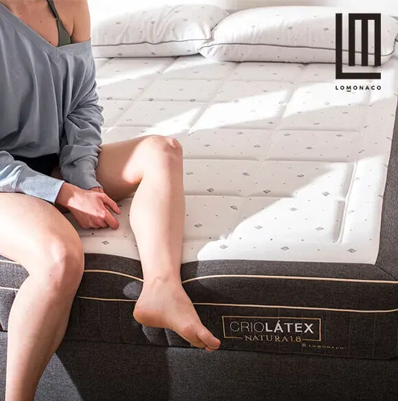

Cuánto Vale un Colchón Bueno

Cuánto Vale un Colchón Bueno
Llevas tiempo pensando cambiar de colchón, uno de tus hobbies preferidos en estas últimas semanas es buscar en Google: “cuánto vale un colchón”, “precio de un buen colchón”…
Cada noche antes de acostarte inviertes un rato de tu tiempo en hacer un pequeño estudio de mercado para encontrar un colchón que se adecue a tus necesidades y que no sobrepase tu presupuesto.
¿Eres de poner límite a tus sueños? ¿Acaso tu descanso tiene un precio? ¿Cuánto cuesta un buen colchón?
A la hora de responder estas preguntas, es habitual que pensemos en cuál es el mejor colchón calidad precio del mercado.
Un pack de productos de descanso (que incluye colchón, base, almohada y ropa de cama), supone un importante a la vez que más que razonable desembolso, que debemos tratar como una inversión en salud, porque todos sabemos que dormir bien cada noche es uno de los pilares de un estilo de vida saludable. Además, no cambiamos de colchón todos los días, por lo que nos interesamos por el precio de un colchón bueno.
Precio de un Colchón Bueno
Son muchos factores los que influyen en el precio de un colchón de calidad. Buscamos un colchón bueno y barato, y esto no siempre es posible. El precio de los colchones Lo Monaco depende de la medida, modelo de colchón y materiales, por lo que no se trabaja un solo precio, eso sí tenemos una oferta en la que para que te hagas una idea del precio, puedes tener un pack de colchón Lo Monaco o bien en la medida de 90 (cama individual) o bien de 135 cm (cama de matrimonio); disfruta del buen descanso, ¡en LoMonaco somos muy black, y tenemos buenos colchones a buen precio!
A la hora de elegir colchón, tenemos numerosas opciones en cuánto a sus características:
- Colchones de muelles
- Muelles ensacados
- Colchones viscoelásticos
- Colchón de latex y látex natural
- Colchón de firmeza alta, media o baja
En otras ocasiones, puede que necesitemos un colchón de espuma:
- Espuma de alta densidad
- Espuma viscoelástica
- Espuma eliocel
En definitiva, buscamos colchones de buena calidad que se adapten a nosotros. Tanto a nivel de descanso como de salud. En ocasiones, una buena distribución de los puntos de presión de colchón hace que se nos alivien los dolores de espalda.
Elige tu forma de pago
Ponemos a tu disposición diferentes modos de pago, para que elijas la que más se adapte a tus necesidades. Puedes pagar con tarjeta Visa o Master Card para completar el pedido en la visita del asesor del descanso o cuando compres online con total tranquilidad.
Además, siempre tienes la oportunidad de pagar al contado tu compra a través de una transferencia bancaria o un pago contra reembolso.
Compra tu colchón Lo Monaco a plazos
Financiar un colchón online es la opción de pago que marca la diferencia de Lo Monaco. Trabajamos con diferentes entidades financieras que operan a nivel nacional, para ofrecerte una opción de pago aplazado a medida; a través esta alternativa, tenemos la posibilidad de tener un equipo de descanso de alta gama, desembolsando pequeñas cantidades de dinero, para que tu nuevo colchón no te quite el sueño.
Paypal: la forma de pago preferida por los amantes de la compra online.
Esta semana negra que hemos tenido y que se prolongará hasta el domingo y que culminará el lunes con el Cyber Monday, las compras a través de tiendas online y plataformas de e-commerce serán las grandes beneficiadas. Hay una forma de pago, que parece ser la que más confianza ofrece a los compradores online, frente incluso a los pagos con tarjeta de crédito, estamos hablando de la forma de pago a través de Paypal.
Un reciente estudio de la Universidad de Granada ha arrojado interesantes datos con respecto a las formas de pago disponibles a la hora de hacer una compra online; pagar con Paypal, frente a pagar con las tradicionales tarjetas de crédito, activa áreas cerebrales relacionadas con la recompensa, la seguridad y el afecto; sin embargo las tarjetas, áreas emocionales relacionadas con las respuestas negativas. Y un dato curioso, la insatisfacción con el resultado de la compra online, se sentía cuando no se cumplían las expectativas con respecto a plazos en entrega o con la calidad del producto.
En palabras de los investigadores que comandaban el trabajo: “Estos resultados son interesantes para empresas que venden sus productos a través de Internet, sobre todo, bienes de baja implicación. Los profesionales que venden este tipo de servicios deberían incluir en su página web al menos PayPal y dirigir sus esfuerzos en garantizar la entrega del producto en el momento y forma acordados vía online”